Wie löse ich Matheaufgaben?
Flächenberechnungen
Sie sehen ein gelbes Eingabefeld und die
Schalter: Prüfen und Lösung.
Tragen Sie Ihr Ergebnis ein, prüfen Sie es
oder starten Sie eine Lösung.
Aufgabe 68
Berechnen Sie die Fläche des Vierecks, sowie die Länge der Seiten a und b.
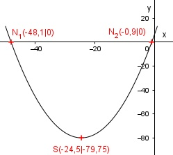
b = cmAufgabe 69
Die Diagonale eines Rechtecks hat eine Länge
von 8 cm. Die Seite a ist
3 cm lang.
Wie groß sind die Fläche A und die Seite b?
Aufgabe 70
Ein Rechteck hat eine Fläche von 8 cm2 und die Seite a von 2 cm. Wie groß sind die Diagonale d und die Seite b?
b = cmAufgabe 71
Die Seiten eines Rechtecks verhalten sich wie 2 : 3. Das Rechteck hat die gleiche Fläche wie ein Quadrat mit der Seitenlänge 4 cm. Wie groß sind die Seiten a und b und die Diagonale d des Rechtecks?
Aufgabe 72
Ein Rechteck hat die gleiche Fläche wie ein
Quadrat mit der Seitenlänge
4 cm.
Die Diagonalen von Rechteck und Quadrat
verhalten sich wie 3 : 2.
Wie groß sind die Seiten des Rechtecks?
Aufgabe 73
Ein Parallelogramm hat eine Fläche von 12 cm2, eine Seite von4 cm und eine von 8 cm. Wie groß sind die Höhe und die längere Diagonale?
Aufgabe 74
Wie groß ist die Seite eines Quadrates, das so groß ist wie einRechteck mit den Seitenlängen 3 cm und 5 cm?
Sie ist cm groß.Aufgabe 75
Wie groß ist die Fläche des eingeschlossenen Quadrates und die Länge seiner Diagonale?
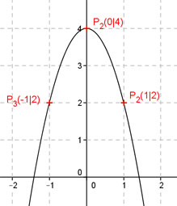
Aufgabe 76
Berechnen Sie die Länge der Seiten des einbeschriebenen Rechtecks. Die Flächen des Quadrates und des Rechtecks verhalten sich wie 3 : 1.
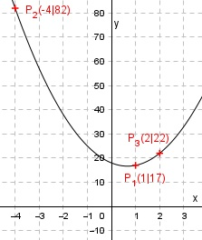
Längere Seite = cmAufgabe 77
Die Diagonalen einer Raute sind 4 cm und 6 cm lang. Wie groß sind ihre Fläche A und die Länge a einer Seite?
Aufgabe 78
Wie groß ist die Höhe h einer Raute, wenn ihre Seiten 8 cm lang sind und eine Diagonale 3 cm?
h = cmAufgabe 79
Wie groß ist die Höhe h einer Raute, wenn ihre Fläche 16 cm2 beträgt und ihre Seiten 6 cm?
Aufgabe 80
Die Diagonalen eines rechteckigen Platzes sind 43 m lang und schließen Winkel von 60° bzw. 120° ein. Wie lang sind die Rechteckseiten?
Längere Seite = m.Aufgabe 81
Wie groß ist die Fläche A des Profilstahls?
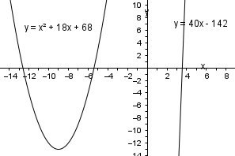
Aufgabe 82
Aus einem Baumstamm soll ein rechteckiges Kantholz mit denMaßen 5 cm und 12 cm hergestellt werden. Welchen Durchmesser d muss der Stamm haben?
d = cmAufgabe 83
Wie groß ist der Inkreisradius einer Raute, deren Diagonalen 52 mm und 88 mm lang sind?
Aufgabe 84
Wie groß sind b, d, l, u und v?
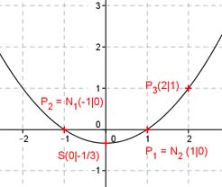
l = cmAufgabe 85
Die Basis eines gleichschenkligen Dreiecks ist 6 cm, ein Schenkel 8 cm lang. Wie groß ist seine Fläche A, wenn ein 1 cm breiter Streifen parallel zu einem Schenkel abgeschnitten wird?
Aufgabe 86
Wie lang ist d?
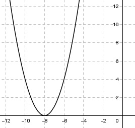
d = cmAufgabe 87
Wie groß ist die Fläche A des Trapezes?
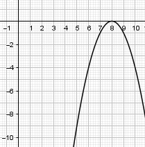
Aufgabe 88
Wie groß muss man h1 machen, damit das gleichschenklige Dreieck halbiert wird?
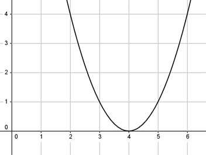
h1 = cmAufgabe 89
Wie groß ist die Fläche A des schraffierten gleichschenkligen Trapezes, das in einem gleichseitigen Dreieck mit dem Umkreisradius r = 6 cm liegt?
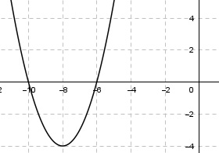
Aufgabe 90
Wie groß muss h sein, wenn sich die Fläche des Trapezes zur Fläche des darüberliegenden Dreiecks wie 3 : 2 verhält?
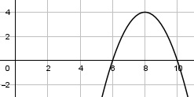
h = cmAufgabe 91
Wie groß sind g1 und g2 von dem gleichschenkligen Trapez?
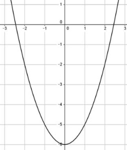
Aufgabe 92
Berechnen Sie die Höhe h, die Diagonale d und die Seite a des gleichschenkligen Trapezes.
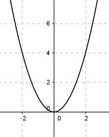
d = cmAufgabe 93
Ein Trapez mit einer Mittellinie von 6 cm und einer Höhe von 4 cm soll einem gleichseitigen Dreieck flächengleich sein. Berechnen Sie die Länge a einer Dreieckseite und das Verhältnis der beiden Höhen.
Aufgabe 94
Berechnen Sie die Länge der Grundseite g1 und der Seite b.
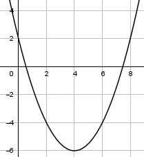
b = cmAufgabe 95
Ein gleichschenkliges Dreieck ist 12 cm hoch. Es soll durch parallel verlaufende Teilstriche in 3 gleich große Flächen unterteilt werden. In welchen Höhen verlaufen die Teilstriche?
Aufgabe 96
Ein Rechteck ist 4 cm breit und 13 cm lang. Es soll so zerteilt werden, dass zwei Trapeze entstehen, deren Grundseiten 4 cmund 9 cm lang sind. Wie lang ist die Schnittlinie l?
l = cmAufgabe 97
Von einem gleichschenkligen Trapez sei die eine parallele Seite zweimal und die andere dreimal so groß wie der Schenkel mit 3 cm. Wie groß sind der Umfang U und die Fläche A des Trapezes?
zurück